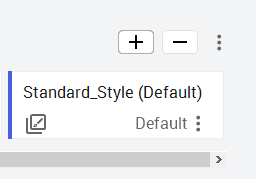
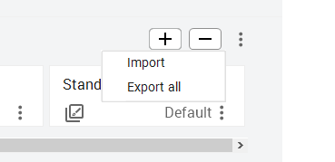
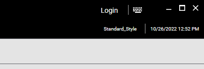

A Galaxy Style applies consistent visual and numerical styling to the presentation of graphics in an OMI ViewApp. Styles provide a means for developers to establish standardized visual themes across an entire application, ensuring that all symbols, alarms, trends, and numerical displays follow the same look and feel. Rather than configuring visual properties individually on each symbol, Galaxy Styles allow you to define overrides once and apply them globally.
Galaxy Style Categories: A Galaxy Style includes visual overrides for six categories:
Quality & Status — visual elements for quality/status states at runtime
HMI Element — text, fill, line, and outline properties for symbols
Alarm Element — severity colors, acknowledgment states, and alarm borders
Trend Element — styles for SA_SinglePen and SA_MultiTrendPen symbols
User defined — 24 user-customizable styles
Format — visual overrides for numerical value display (25 format styles)
Accessing Galaxy Styles
To view and manage Galaxy Styles, open the Configure Galaxy Styles area from the Galaxy menu by selecting Configure → Galaxy → Styles. Predefined styles cannot be deleted and new styles cannot be added to the Galaxy Style list, but you can add, configure, designate a default, duplicate, delete, import, and export style cards within the configuration area.
By default, the Standard_Style is provided and set as the active style for the Galaxy. The Styles area lists each style as a card, and each card provides access to all available overrides for that style.
Galaxy Styles configuration — the Styles panel displays predefined style cards (APG, Aqua, BlueSteel, Brick, Denim, Flora) in a scrollable row. The Standard_Style (Default) is selected, showing the Quality & Status tab with 13 status/error indicator categories including Communication Error, Pending, Warning, Bad, and more.
Quality & Status Styles
Quality & Status styles define the visual elements that appear at runtime to indicate quality and status conditions. You can configure text, fill, outline, blink behavior, and display icons for various states including communication errors, configuration errors, warnings, bad quality, and security errors. At runtime, these indicators appear in the Navigation App adorners for each node in the hierarchy — for example, if communication is lost, the appropriate icon appears to indicate the type of failure.
The Quality & Status tab displays 13 status categories, each with a colored icon, a text field for the numeric value, and an edit button (pencil icon) for modifying the visual override. The categories are: Communication Error, Configuration Error, Pending, Operational Error, Software Error, Security Error, Warning, Out Of Service, Device Failure, Bad, Uncertain, Initializing, and Live Value Playback.
Quality & Status tab — 13 status/error categories displayed as cards. Each card shows the status name, a colored icon representing the condition (red for errors, yellow for warnings, green for playback), and edit controls for customizing the visual override.
HMI Element Styles
An HMI Element style defines the visual properties that determine how text, lines, outlines, and fills appear in symbols. Each override specifies a preconfigured visual property that takes precedence over the native visual properties of an element. You modify these on the HMI Element tab with overrides for:
Property Group
Overridable Settings
Text
Font, size, style, color, and blink settings
Fill
Fill color and blink settings
Line
Patterns, weight, color, and blink settings
Outline
Whether outlines are shown
Alarm Element Styles
Alarm Element styles define the visual appearance of alarm severity levels, alarm states, and user acknowledgment. The four severity levels use distinct color coding, and each severity has three visual indicator states.
Severity
Color
Critical
Red
High
Yellow
Medium
Cyan
Low
Magenta
State
Description
ACK
Acknowledged but still in alarm
RTN
Return to normal but unacknowledged
UNACK
Unacknowledged and still in alarm
Alarm Element styles also include alarm border styles in the form of visual outlines that frame alarm-related elements.
Trend, User Defined, and Format Styles
Trend Element styles support the SA_SinglePen and SA_MultiTrendPen symbols from the Situation Awareness Library, controlling how trend lines and pens are displayed.
User defined styles provide 24 customizable style slots that you can configure for any purpose specific to your application.
Format styles are used to provide visual overrides for numerical values displayed in the ViewApp. These styles allow overriding the format of value range, fixed width, and precision for each numerical value, enabling standardization across the ViewApp for number display. The list contains 25 user-defined format styles.
Managing Style Cards
The Styles area provides buttons in the top-right for adding, deleting, and managing style cards. You can also access a menu for importing and exporting style cards.
Adding and Deleting Styles
Click the Add (+) button to duplicate the currently selected style card with an incremented name. The new card can be renamed and edited independently. To delete a style, select the card and click the Delete (−) button.

Adding a style card — click the + button to duplicate the selected style card. The new card inherits all settings from the original and can be renamed and customized.
Import and Export
Click the vertical ellipsis (three dots) in the top-right of the Styles area to access Import and Export All options. Import allows you to bring in one or more style files (XML format). Additional predefined styles are available in the installation path at C:\Program Files (x86)\ArchestrA\Framework\Bin\AdditionalElementStyles. Export All exports every style card to XML format.

Import/Export menu — click the ellipsis button to access Import (for importing XML style files) and Export All (for exporting all style cards to XML).
Style card context menu — each card offers Make default (activate for Galaxy), Rename (or press F2), Duplicate (or Ctrl+D), Delete, and Export options.
Managing Individual Style Cards
Each style card has a context menu accessible from the vertical ellipsis at the bottom-right of the card. Key operations include:
Make default — activates the selected style for the Galaxy (only one style can be active at a time)
Rename — changes the card name (or click the title directly, or press F2)
Duplicate — creates a copy of the style card (or press Ctrl+D)
Delete — removes the selected style card
Export — exports the specific selected style card
TitlebarApp Style Libraries
The TitlebarApp can be configured to include a button displaying the active style name on the title bar at runtime. Clicking this button shows a drop-down list of all styles in the Galaxy, allowing users to switch styles on the fly. To enable this, set the Content and Display Area → Style Libraries property to a location on the title bar, such as SecondaryRight (right side of the second title bar row).
TitlebarApp configuration — the Style Libraries property is set to SecondaryRight to place the style selector button on the right side of the second title bar row. At runtime, clicking this button opens a dropdown to switch styles.

Runtime style selector — the title bar displays "Standard_Style" as the active style. Clicking this button reveals a dropdown listing all available Galaxy styles for dynamic switching.
📝 Knowledge Check
Q1: What are the six categories of visual overrides in a Galaxy Style?
Quality & Status, HMI Element, Alarm Element, Trend Element, User defined, and Format styles.
Q2: How do you access the Galaxy Styles configuration area?
From the Galaxy menu, select Configure → Galaxy → Styles.
Q3: What are the four alarm severity levels and their colors?
Critical (Red), High (Yellow), Medium (Cyan), and Low (Magenta).
Q4: How do you enable the style selector button on the ViewApp title bar?
Set the TitlebarApp's Content and Display Area → Style Libraries property to a title bar location such as SecondaryRight. This places a clickable style name button on the title bar that opens a dropdown of available styles.
Q5: Can you delete a predefined style from the Galaxy Style list?
No. Predefined styles cannot be deleted and new styles cannot be added to the Galaxy Style list. However, you can duplicate a predefined style and then modify the copy.